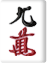

アガリ形式
通常の「4面子1雀頭」以外に、牌の枚数が変動するため**「n面子1雀頭」**および**「n対子」**でアガることができます。
特殊な捨て牌
- 5とばし: 萬子・筒子・索子の5を捨てると、次の人のツモ番を飛ばします。(鳴かれた場合は無効)
- 8切り: 萬子・筒子・索子の8を捨てると、もう一度自分のツモ番になります。(鳴かれた場合は無効)
-  9捨て: 萬子・筒子・索子の9を捨てると、追加でもう1枚手牌を捨てます。(鳴かれた場合、リーチ中の場合は無効)
- 7わたし: 萬子・筒子・索子の7を捨てると、自分の手牌1枚を他のプレイヤーに渡せます。(鳴かれた場合、リーチ中の場合は無効。リーチしている相手には渡せません)
革命
誰かがカンをすると**「革命」**状態になります。革命中はアガリの点数計算が反転します。
- 基本計算: 14翻 - (元の役の翻数)
- 元の翻数が役満(13翻)以上の場合は13翻として計算します。
- ドラの翻数は、革命後の翻数にそのまま加算されます。
- 局の合計カン回数が偶数回になると、革命は終了し通常状態に戻ります。